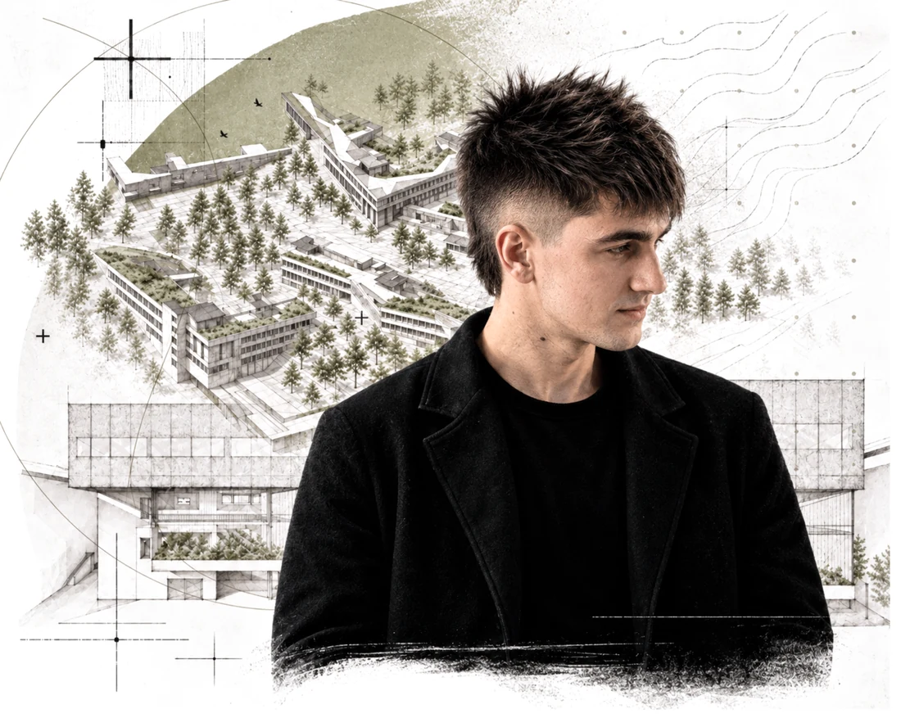

Arquitecto / Andoain, Gipuzkoa
Joseba Oteiza.
Vivienda pública. Regeneración urbana.
Cambios de uso.

Perfil
Arquitecto con Máster en Vivienda Pública. He trabajado en vivienda protegida con VISESA, en renaturalización urbana con el Ayuntamiento de Bilbao y en residencial de alta gama con Design Houses: dibujo, gestiono y trato con obra, administración y personas sin intermediarios.
Experiencia profesional
Ayuntamiento de Bilbao
Arquitecto · Paisaje urbano
Propuestas de paisaje urbano e infraestructura verde en entorno municipal: diseño de cubierta verde para plaza urbana y Plan de Acción para la renaturalización de patios escolares. Análisis y diagnóstico de centros escolares, coordinación interdepartamental y jornadas colaborativas con personas usuarias de las huertas municipales y el vecindario de San Ignacio.
- 4 líneas de renaturalización
- 43 colegios: diagnóstico del parque completo y de una escuela en detalle
VISESA · Vivienda y Suelo de Euskadi
Arquitecto · Gestión ambiental de obra y vivienda pública
Seguimiento de aspectos medioambientales en obras de promoción pública vinculadas a los Fondos Next Generation de la UE: certificación energética, gestión de residuos, materiales reciclados y criterios de circularidad. Creación de bases de datos de control en obra y diseño de herramientas de gestión ambiental con IHOBE; relación de trabajo con Alokabide y otros agentes públicos.
- 17 promociones con seguimiento ambiental
Design Houses S.L. · Donostia
Arquitecto
Diseño y promoción de proyectos de vivienda privada y hotelera: Santandría Bai (hotel, Menorca), Agerre Botanik (11 viviendas adosadas en parcela de ~9.000 m², Miramón–Zorroaga) y Somosaguas Natura (villas, Madrid). Documentación y desarrollo de proyecto.
- 3 operaciones: hotel, viviendas, villas
- 14 viviendas (11 adosadas + 3 villas) y 1 hotel boutique
- ~9.000 m² de parcela (Agerre Botanik)
Práctica independiente
Caserío dividido en dos viviendas en Larrabetzu, reformas integrales en Loiola, Lezo e Irura y cambio de uso de local a vivienda en Andoain (en curso). Diseño web y de software, cartelería, edición gráfica y audiovisual, e integración de IA en el flujo de trabajo.
- 5 intervenciones en Gipuzkoa y Bizkaia
- 6 viviendas: 5 reformadas + 1 cambio de uso en curso
Hostelería y gestión de equipos
Azurmendi 3★ Michelin como jefe de rango y comedor (2021). Servicio de sala en Restaurante Aboiz (Garai, 2022 – actualidad), Taula Bar (responsable de sala, 2019), Sidrería Zabala (2018), Café de la Concha (jefe de rango y comedor, 2016 – 2019), Oven Mozzarella Bar (Madrid, 2016) y Foster's Hollywood (2012 – 2013).
Gestión de equipo, planificación de turnos y proveedores; disciplina, ritmo y trato con equipos y clientes exigentes.
Cómo trabajo
Trabajar con datos
Apoyarme en el análisis y el diagnóstico, no en suposiciones.
Cercanía con lo público
Coordinar con administraciones y vecindario y facilitar el trabajo común.
Sostenibilidad
Buscar soluciones razonables y respetuosas con el entorno.
Aportar en equipo
Arrimar el hombro donde haga falta y aprender de los demás.
Seguir aprendiendo
Adaptarme y sumar herramientas nuevas cuando ayudan de verdad.